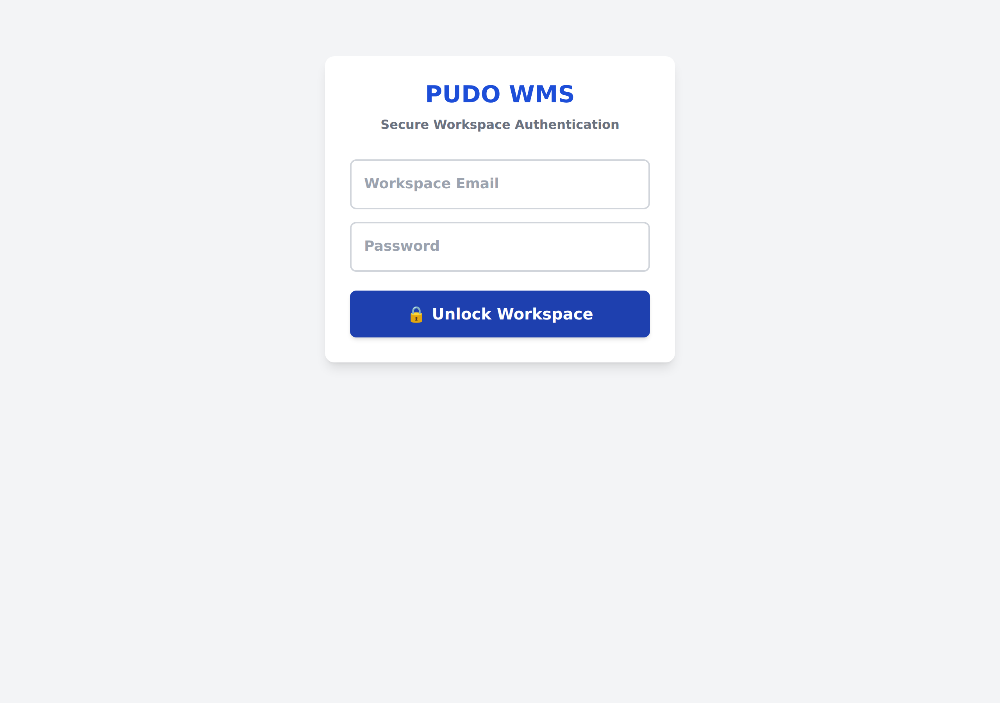

Parcel Warehouse Management System
PUDO WMS is a warehouse management system used to track every parcel that arrives at, is stored in, and leaves a PUDO (pick-up / drop-off) outlet. It records where each parcel is placed (rack / level / slot), who handled it, and when.
Parcels come from two platforms, identified by their tracking number (AWB) prefix:
SPXMY (17 characters).680 (15 digits).The system is a web app that runs in any modern browser (Chrome recommended). It works on desktop, tablet, and phone. Data is stored in the cloud (Firebase) and syncs across all devices in near real time.
Every parcel follows the same journey through the system:
When you open the app, you are shown a staff login screen. Tap your name and enter your personal PIN.
After logging in, your name appears in the top bar and the main interface unlocks. To end your shift, tap End Shift.

The app is organised into six tabs along the top:
| Tab | Purpose |
|---|---|
| 📥 IN | Scan parcels into the warehouse and assign them a slot. |
| 📤 OUT | Find and hand over parcels to customers. |
| 📊 STOCK | Browse, search, and manage the full active inventory. |
| 🗂️ MULTI | Detect customers with many scattered parcels for consolidation. |
| 📜 HIST | View recently collected parcels and undo mistakes. |
| 🗄️ SLOTS | See a live map of every rack/slot and how full it is. |
This is the most-used screen. It assigns each incoming parcel to the next available slot.
At the top of the IN screen are four fields that determine where the next parcel goes:
A, B, H).1, 2).15).The large blue number in the centre shows the next target location (e.g. H-2-4). Below it, the system shows how many items are already in that slot (e.g. "Item 10 of 15 currently in slot").
Every parcel is stored at a precise address made of three parts:
Tap 📷 Start Continuous Scanner to enable the camera. Point it at the barcode — it detects and saves automatically, with a short cooldown (~1.5s) between scans. Tap 🛑 Stop Scanner to turn it off.
| Result | Meaning |
|---|---|
| ✅ Saved to [slot] | Parcel successfully stored. |
| 🚨 Duplicate scan | This AWB is already in the system (shows its existing location). |
| ⚠️ Invalid barcode | The AWB format is wrong (must start with 680 or SPXMY). |
| ❌ Failed to save | Network problem — the system auto-retries in the background. |
Tap 📋 Recent Scans to open the scan log, which records every scan attempt with its timestamp, staff member, and result. You can filter by AWB and view Today / Last 50 / Last 100 / Last 500 / All (7 days).
Use this screen when a customer comes to collect their parcel(s).
When a customer has multiple parcels, the system automatically finds and groups all parcels belonging to the same customer name. These extra parcels are marked with an Auto-Found badge.
Tap 📦 COLLECT ALL DISPLAYED to hand over all currently displayed parcels at once, or collect parcels individually. Collected parcels move from active inventory into history.
This screen shows the full active inventory as cards. Each card shows the parcel's location, tracking number, platform badge, customer name, who scanned it in, and when.
Use the filter buttons to narrow the view:
Search by location (e.g. H-2) or tracking number. Sort by Rack (A–Z), Oldest First, or Newest First.
Each card has action buttons:
If a parcel is in the wrong slot, or you need to reorganise, use the move feature.
Parcels that have been on the shelf too long (T+6 or older) must be returned to the courier. The RTS workflow has two steps:
RTS-BOX.Parcels flagged for RTS show a red T+6 (RTS) badge on their card.
Some customers have 3 or more parcels scattered across different slots. This screen detects those customers so you can consolidate their parcels into the dedicated BULK-RACK, freeing up standard slots.
This screen shows the last 50 collected parcels. Each entry shows the tracking number, customer, which rack it came from, who collected it, and when.
Use the search box to find a specific historical AWB (searches the full history, not just the last 50).
If a parcel was collected by mistake, tap ↩️ Undo on its history entry. The parcel is restored to active inventory.
This tab shows a visual map of every rack, level, and slot, with the current item count in each.
Each cell shows the slot number, the current count, and the capacity (e.g. 10 / 15). Colours indicate how full the slot is (see the legend below).
The admin dashboard (a separate screen) provides a live operational overview for management:
The slot map uses colours to show how full each slot is:
Full slots also show a FULL badge.
Check the device's Wi-Fi connection. The system needs a stable connection to save each scan. If a scan fails, it auto-retries in the background.
The AWB is already in the system. The message shows its existing location. Do not scan it again — check the existing slot.
Grouping matches the exact customer name. If the name was typed differently (e.g. different capitalisation), search each parcel individually.
Tap 🔄 Sync to refresh. The map is not live — it only updates when you open the tab or tap Sync.
Use 🔄 Move to New Slot again to correct it.
Go to the HIST tab, find the parcel, and tap ↩️ Undo.
Allow camera permission in the browser. If it still fails, type the AWB manually into the input box.